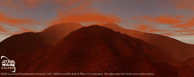

|

LOK
Terrain: Red deserts, sulfur pools, mountains, lava lands
Key Locations: Nym's base
One of the first planets in the Karthakk system to be colonized, the harsh world of Lok was originally home to outlaws, who saw the world as a potential staging ground for raids into the Mid-Rim. Over time, Lok became known as a "pirate world," where anarchy and violence were the only constants.
Lok has fairly varied terrain, ranging from the dangerous sulfur pools to bubbling lava pits. The landscapes are generally foreboding: jagged mountain ranges, long expanses of baked desert, and desolate flats are typical environments on Lok. The presence of pirates and others is evident in the shipwrecks, burned-out bases, abandoned settlements, and destroyed vehicles that litter the planet.
Before the Battle of Naboo, one of the most prominent leaders on Lok was a Feeorin pirate named Nym. The hardy alien - who has only become more formidable with age - spent many years battling the Trade Federation. He is now a local crime lord, but it is also rumored that he is very sympathetic to the Rebellion...
Players who visit Lok can expect to encounter a wide range of threats, from marauding pirates to the local wildlife, most of which is decidedly dangerous. However, those who prove themselves to Nym will gain access to a number of lucrative and exciting missions.
|